Before and after
Every image on this page was taken in headless Chrome. The after images come from a production build of the work/r39-timeline branch. The before images come from the live site at the start of the polish pass, driven by the same step files (scripts/audit), at 1440 by 900 for desktop and 390 by 844 at 3x for phone. The before captures are stored at a lower resolution, so each pair is shown in a frame of the same size. Click any image to open the file.
Images that show YouTube thumbnails or book covers sit under local/ and are not stored in the repo. If one is missing, its frame says so and the rest of the page still reads. The Round 6 row has its own before images (the round 5 build) and after images (the round 6 build); the Round 7 row after it has round 6 before images and round 7 after images. Audit ids refer to docs/redesign/audit-2026-11-11.md and the fixes to docs/redesign/changes-2026-11.md.
Loader frames
Desktop, 1440 by 900, cold load
Before


After
Phone, 390 by 844
Before
What changed The name now starts at first paint and the first painting is on screen by 3.5 s, where before the page was still on the logo at 5.2 s.
Hero
Desktop, settled
What changed The hero is the same layout, now with the rails labelled about and credits, the dock reading home and work, and the cue at 13 px and 72%.
Rails close-up
Left rail, cropped from the hero frames above
Before
After
What changed The rail label stays readable at rest (13 px, was about 9 px because it shrank with the card) and the rail is named credits.
Intro card
Card open, desktop
What changed Card text is 15 px at 72% or more (was 13.5 px at fainter greys), and the card heading and rail use the shared type scale; the rail now says about.
Credits card
Card open, desktop
What changed Text moves onto the type scale with nothing fainter than 62%, and the portrait is a 17 KB JPEG instead of a 1.26 MB PNG.
Blocks
Desktop · not stored in the repo


Phone · not stored in the repo


What changed Block titles drop to 56 px at most (was 63 px), copy is 15 px, the mini shelf is centred, and the section is balanced above and below.
Shelf drop-in
Desktop
Before
After
What changed Books drop straight with a shorter fall: before they tilted every which way and passed through each other.
Shelf on a phone
Phone, 390 by 844
Before
After
What changed The header has a dark fade behind it, the Close button has no Esc hint, and a marker under the plank shows where you are in a shelf that any pointer can drag.
Shelf opening: empty versus placeholder
Desktop, just after the click
Before
After
What changed At 1.5 s the old shelf is an empty wall, while the new one already shows its plank; if the 3D shelf is late, a flat placeholder of the plank and one bar per book shows instead (S-01 in changes-2026-11.md; these warm runs did not need it).
Wall
Desktop, a tile hovered · not stored in the repo

What changed Alternate columns sit back (smaller, dimmer, slower), the hovered tile comes forward with a lit edge, and the header has a dark fade behind it.
Wall detail on a phone
Phone, 390 by 844 · not stored in the repo
Before
 Not stored in the repo.wall
Not stored in the repo.wall Not stored in the repo.video open
Not stored in the repo.video openAfter
 Not stored in the repo.wall
Not stored in the repo.wall Not stored in the repo.video open
Not stored in the repo.video openWhat changed With a video open the layer header hides, so the two Close buttons no longer share a corner.
Page change, home to work
Frames taken in order after clicking the work tab
Before
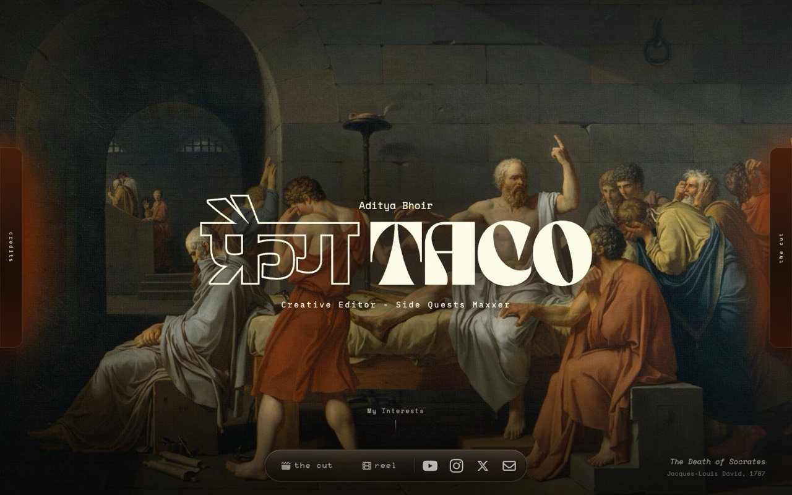
Image missing.frame 6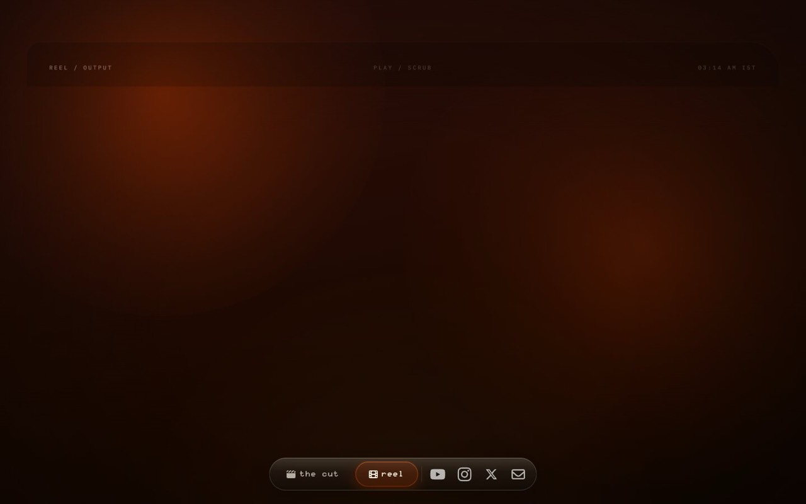
Image missing.frame 7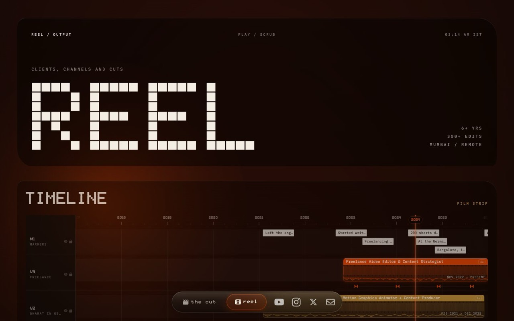
Image missing.frame 9After
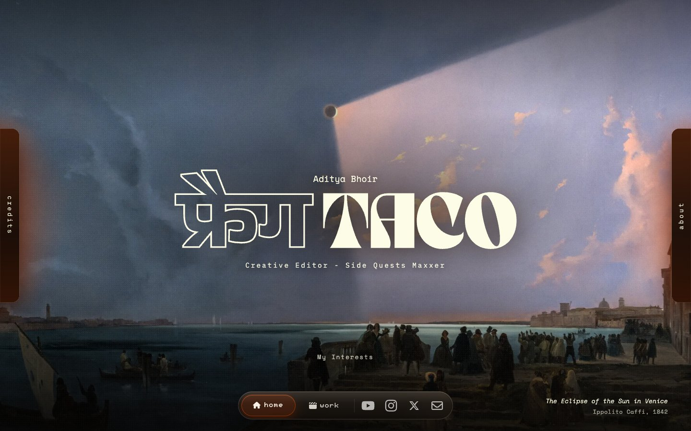
Image missing.frame 0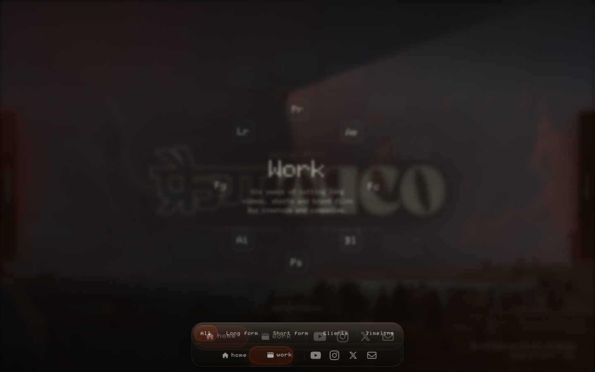
Image missing.frame 1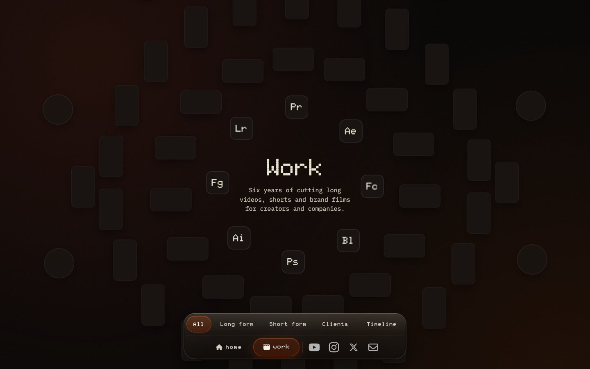
Image missing.frame 3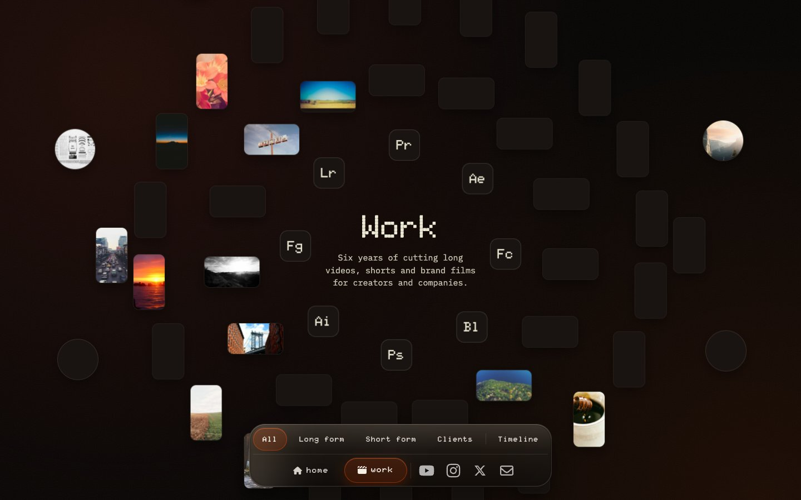
Image missing.frame 5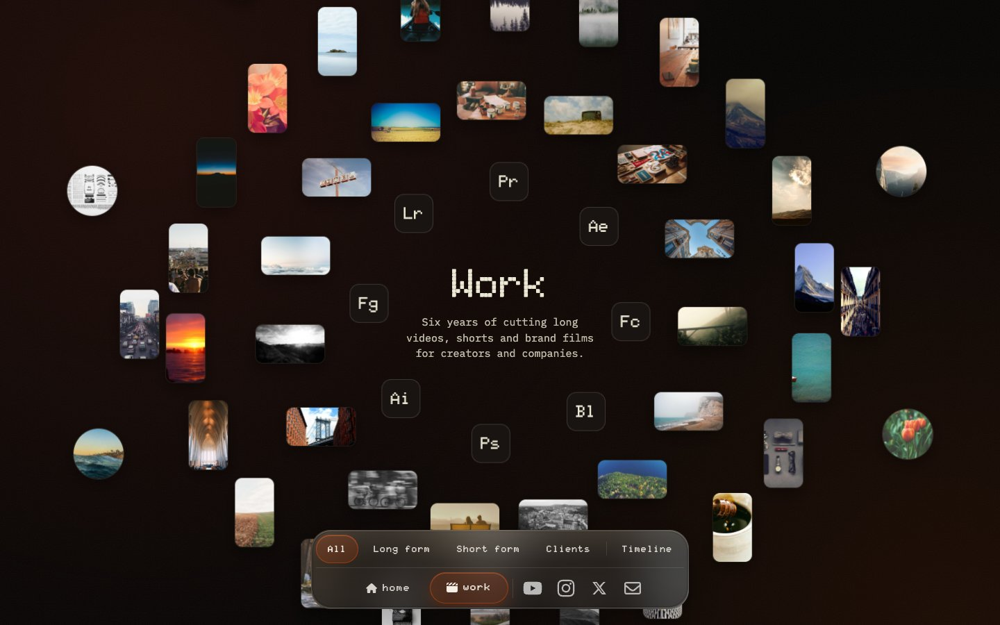
Image missing.frame 9What changed Before, nothing moved for several frames and then the page cut to a dark gap; now the hero blurs out and the work page blurs in, with the dock holding still.
Page change, work to home
Frames taken in order after clicking the home tab
Before
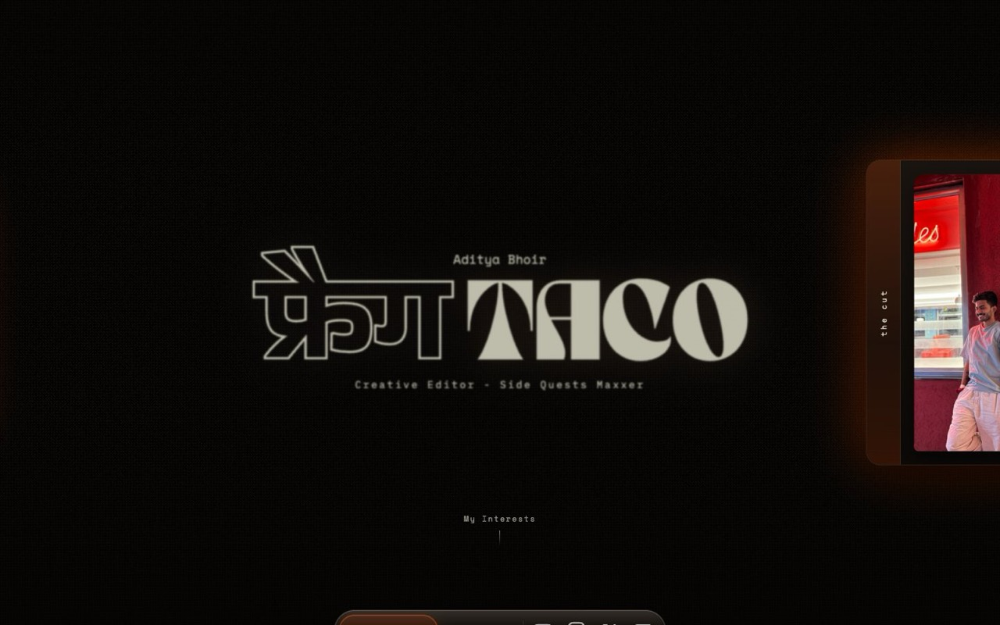
Image missing.frame 3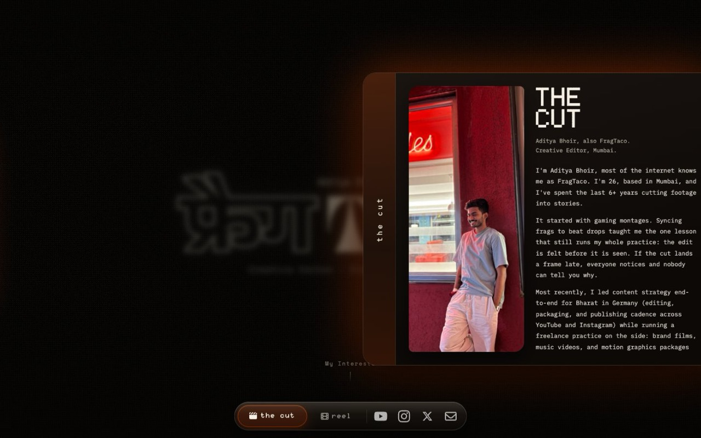
Image missing.frame 4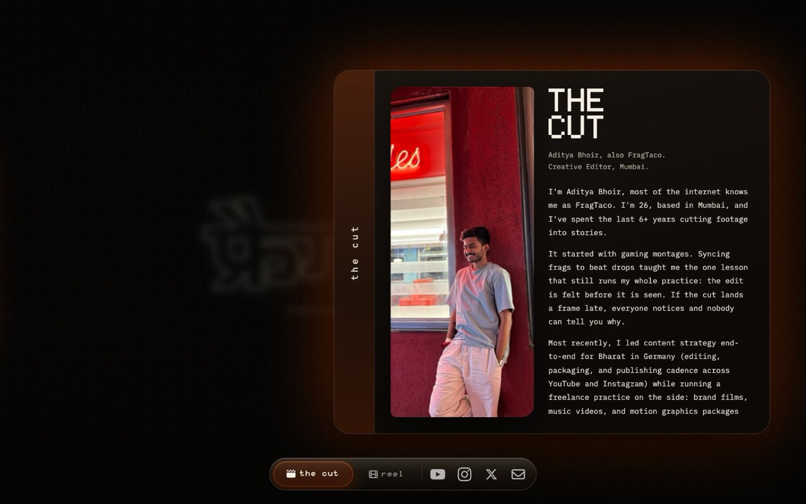
Image missing.frame 9After
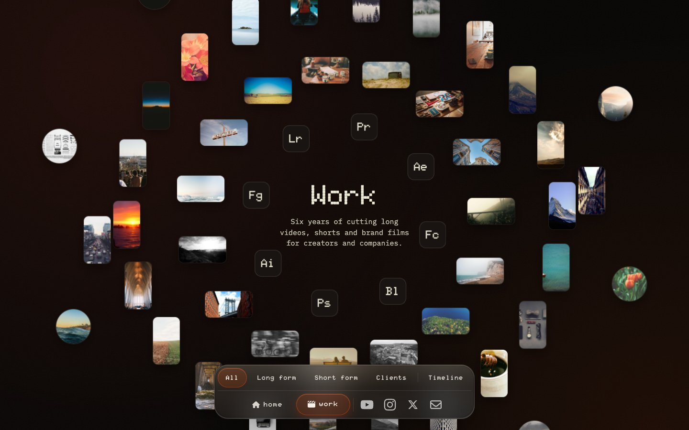
Image missing.frame 0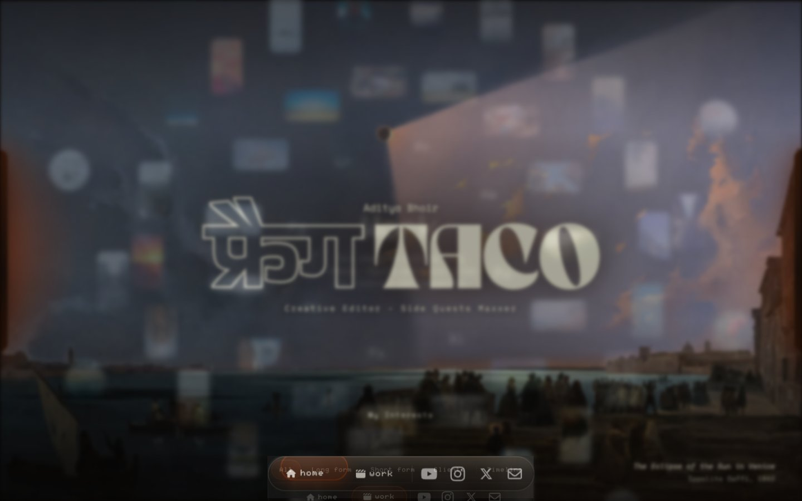
Image missing.frame 1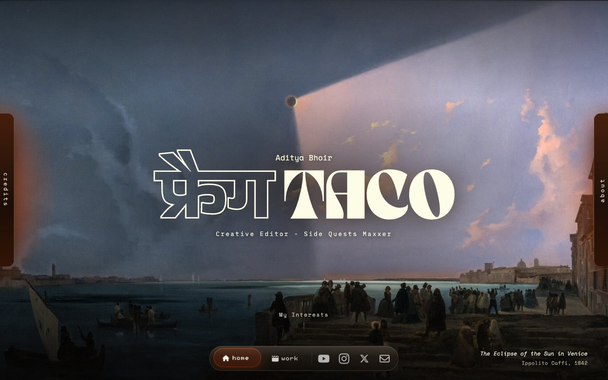
Image missing.frame 2What changed Before, home meant a black hero with the intro card opened; now it blurs back to the last painting with no black and no card.
Work page: old versus rings
Desktop, the page at rest
After
After only, picked view and phone
Before
After
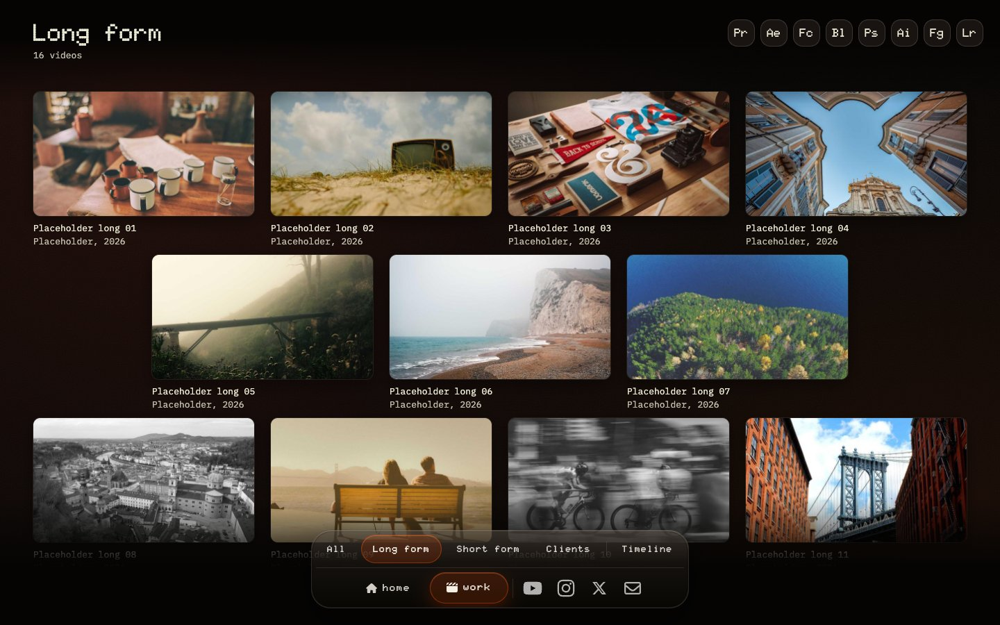
Image missing.long form, desktopWhat changed The reel page with its film strip is replaced by four slowly turning rings around a short intro, and a second dock row opens a flat view of any ring.
Timeline
After only
Before
After
After only, phone
Before
After
What changed One square for every day since December 2020, coloured by role, that fits one screen and zooms to single days.
Type scale
| Role | Before (audit) | After (tokens.css) |
|---|---|---|
| Smallest text (key hints, artist line) | 10.5, 11, 11.5 px | --t-micro 12 px |
| Labels, counts, pills, the cue, list rows | 11.5, 12, 12.5, 13 px; cue 11.5 px at 60% | --t-meta 13 px; cue 13 px at 72% |
| Running text (cards, block copy, notes) | 12.5 to 13.5 px (card copy 13.5 px) | --t-body 15 px, 14 px on phones; line height 1.7 in cards |
| Small name, credits blurb | 14, 14.5, 16, 18 px | --t-lead 18 px, 15 px on phones |
| Layer titles | set separately in each component | --t-title clamp(24px, 2.4vw, 38px) |
| Block titles | 63 px | --t-display clamp(40px, 3.6vw, 56px) |
| Card headings | set separately in each card | --t-hero clamp(46px, 4vw, 80px) |
| Rail labels | about 9 px (16 px shrunk with the card) | 13 px at rest and open |
| Dock labels on a phone | 10 px | --t-micro 12 px (desktop stays 14 px) |
| Number of small sizes in use | eleven, from 10.5 to 18 px | four named sizes (12, 13, 15, 18) plus the display scale |
| Secondary text strength | seven levels: 42, 45, 50, 52, 55, 60, 62% | three levels: 92%, 72%, 62% |
What changed Eleven undecided small sizes became four named ones plus the display scale, and secondary text went from seven strengths to three.
Round 6: rings, walls, page changes, wall, shelf and experience
Before and after Before is the round 5 build (the "after" pictures above). After is the round 6 build, on the production build of the r6/r45-experience branch. Pictures with YouTube thumbnails or book covers sit under local/ and are not stored in the repo. The video wall pictures from round 6 (rows with generated placeholders) show numbered tiles because there are no real work videos yet.
Work rings, desktop 1440 by 900
Before
After
Work rings, phone 390 by 844
Before
After
What changed The rings are bigger than the screen, one ring of the real app icons and up to four rings of videos that run off the edges and never touch. The ground is a layered shader (a still gradient without WebGPU).
Long form and short form walls, desktop
Before
After
Long form and short form walls, phone
Before
After
What changed Both walls show every video once on one canvas, with small gaps and margins, a light barrel curve and a slow drift. Round 7 feedback asks for the arrival and the warp to change (see the feedback log).
Home to work: frames taken in order after clicking the work tab, desktop
Before
After
Work to home, desktop
Before
After
Long form to short form (the sideways sweep), after only
Before
After
Home to work on a phone, after only
Before
After
What changed Every page change now reveals the new page from the clicked control with a soft mask, a wandering edge, a thin glinting line and (in Chromium only) a banded bend of the old picture; the dock stays still. Other browsers get the reveal and the line without the bend, or a plain crossfade. Round 7 feedback says the change is too fast and asks for it to slow down.
YouTube wall at rest (pointer in the middle) and with a video chosen, desktop · not stored in the repo
Before
 Not stored in the repo.round 5 wall
Not stored in the repo.round 5 wall Not stored in the repo.round 5 video open
Not stored in the repo.round 5 video openAfter
 Not stored in the repo.round 6 wall
Not stored in the repo.round 6 wall Not stored in the repo.round 6 video chosen
Not stored in the repo.round 6 video chosenYouTube wall and video chosen, phone 390 by 844 · not stored in the repo
Before
Not stored in the repo.round 5 wallNot stored in the repo.round 5 video openAfter
 Not stored in the repo.round 6 wall
Not stored in the repo.round 6 wall Not stored in the repo.round 6 video chosen
Not stored in the repo.round 6 video chosenWhat changed The wall is flat with a calm drift and a light curve, no near and far planes. A chosen video travels to the middle at about twice its size while the others step back, shrink and dim; the wall stays drawn behind it.
Shelf at rest, desktop · not stored in the repo
Before
After
 Not stored in the repo.round 6
Not stored in the repo.round 6A book lifted, desktop · not stored in the repo
Before
 Not stored in the repo.round 5 book open
Not stored in the repo.round 5 book openAfter
 Not stored in the repo.first book lifted
Not stored in the repo.first book lifted Not stored in the repo.last book lifted
Not stored in the repo.last book liftedShelf and a book lifted, phone 390 by 844 · not stored in the repo
Before
After
 Not stored in the repo.round 6 at rest
Not stored in the repo.round 6 at rest Not stored in the repo.book lifted, mid-way
Not stored in the repo.book lifted, mid-wayWhat changed The shelf is flat, face on, large and evenly bright: one straight row on a hairline, spines drawn by code in five styles in the cover's colours. A book lifts straight up and turns to its cover beside a solid note card; the books beside it dim and the row stays sharp.
Timeline beside the new experience page, desktop
Before
After
Timeline beside the new experience page, phone
Before
After
What changed The day-by-day timeline is replaced by a map of Olympus Mons on Mars with a route climbing it, one marker per moment, a heading and a caption. Explore zooms in with cards; Places shows eight named features. Round 7 feedback asks for map variations and a change to the cards.
Round 7: the page change, grounds, rings, walls, shelf, boxes and experience
Before and after Before is the round 6 build unless a frame says otherwise. After is the production build of the r7/r55-live-boxes branch (the round 7 tip, d475806), except where a frame names an earlier round 7 build. Pictures with YouTube thumbnails or book covers sit under local/ and are not stored in the repo; the others are generated pictures (numbered tiles, plain gradients) or show no thumbnails. Rulings, costs and what to check by eye are in the feedback log under Round 7: final status.
The page change: round 6, R54 and R56
Home to work, frames in order (round 6) against the R54 build beside the tenth preview
Before
After
R54 against R56, experience to home, at 20, 35, 50, 65 and 80% of the change
R54 (left) and R56 (right)
The page being left, home to work, at three moments: R54, R56 and the difference
R54, R56, difference
What the change costs, from round7/r56-glass-cost.json (make-glass-cost.mjs, a trace between two marks, headless Chrome on an M4 Pro)
| Measure (busy time inside one warmed change, three runs) | R54 as built | R56 | Limit |
|---|---|---|---|
| Renderer compositor thread, 1512 by 982 at 2x | 979, 988, 990 ms | 283, 287, 291 ms | 450 ms |
| Display compositor thread, 1512 by 982 at 2x | 582, 622, 630 ms | 198, 199, 204 ms | 300 ms |
| Renderer compositor thread, 1920 by 1080 at 1x | 1059, 1105, 1108 ms | 338, 340, 379 ms | 450 ms |
| Display compositor thread, 1920 by 1080 at 1x | 659, 667, 726 ms | 232, 233, 263 ms | 300 ms |
| Dropped frames, 1920 by 1080 at 1x | 1, 0, 1 | 0, 0, 0 | 0 |
What changed Round 6 was a 560 ms radial reveal from the clicked control. Round 7 made it one slow reveal from the centre (R50), then 2.5 s with the tenth preview's wide, refracted edge (R54), then leaner and finished before it starts (R56: one map picture per filter, a warm-up, a guard, the arriving page held up to 500 ms until it is ready, and 2.25 s). The cost fell to about a third of R54's on both compositor threads. The sums count a task and its wrapper, so each reads about twice the thread's own time; the baseline, the limits and the ratio all use the same measure. Re-runs at 2.25 s keep both limits; on a loaded machine one frame in 8 of 18 runs dropped (ruling R125 leaves the change's first, snapshot frame out of the dropped-frame rule). The edge look the owner picked from the eleventh preview (the hero painting's liquid at 150%, Task 32) is built after this page, so it is not pictured here.
The Eclipse ground
Work page with its rings, desktop
Before
After
The bare ground, desktop and phone
The four placements (work, long form, home section, short form) and the home section
Before
After
What changed The work pages and the section under the home painting sit on the Eclipse ground: the preview's shader ported to WebGL 1, about 30 frames a second, a still picture first and kept for reduced motion, no WebGL or a lost context. It stops when hidden, covered or changing. The round 6 ground and the shaders package are gone.
Home: tabs and the painting's lower edge
The About and Credits tabs, desktop
Before
After
The tabs and the panel sliding in, phone and mid-slide
Before
The painting's lower edge: live ground, still picture and no WebGL, desktop
Before
After
What changed The tabs are an orange gradient with white text (4.63 to 1), a glow and a drop shadow, and their panels slide in and out over 700 ms. The painting's last 18% fades into the ground below it with no line, in the live, still and no-WebGL cases alike.
The portfolio rings and the dock
Rings at four sizes, before and after R54 (generated pictures, numbered tiles; before is the round 6 layout)
Before
After
With the real thumbnails, 1440 by 900 and 390 by 844 · not stored in the repo


The dock before and after R56.4 (top half of each sheet: tint 0.46 with a drop shadow; bottom half: the build)
Thumbnails passing under the dock's glass (generated pictures; the dock's cut-out and shadow are gone)
After R56.4
The same with the real thumbnails, and the dock on the wall · not stored in the repo
After R56.4
 Image missing.1440, tiles centred
Image missing.1440, tiles centred Image missing.1440, tiles left
Image missing.1440, tiles left Not stored in the repo.dock on the wall, before above and after below
Not stored in the repo.dock on the wall, before above and after belowWhat changed R54 made the thumbnails larger (200 px long side at 1440 by 900 against 112, icons 76 px, two video rings on desktop, one ring of large tiles on phones) and solved the rings by the share of the screen under tiles: 0.151 before and 0.279 with the dock's cut-out, 0.309 counting every tile (the numbers are in round7/r54-2-rings-numbers.json). R56.4 then removed the cut-out and the dock's drop shadow: tiles pass under the glass, the dock tint is 0.61 on every page so each label keeps 4.5 to 1 over the worst tile (rulings R123, R124), and a focused tile that is more than half under the dock is turned clear. Not every video is in the rings on a desktop (10 of 21 long form at 1440 by 900); the walls hold all of them (ruling R120).
Both video walls
Long form and short form, desktop, generated pictures
Before
After
Long form and short form, phone
Before
What changed No warp: one flat grid with the largest tile that keeps every video on screen, 8 px gaps and a short last row centred. The tiles come in from the centre outward (each over its own art, so none is ever an empty box), and a Back pill takes the place of the rings button. In R56 the walls are ready in the arriving page, so after a change the tiles are in place when the reveal ends; the arrival sheets above show a first load.
The YouTube wall: a finite block, its camera and its edges
Home wall at rest and a video chosen, desktop and phone · not stored in the repo
Before
Image missing.round 6, flat wall, hoverImage missing.round 6, phoneAfter
 Image missing.block at rest
Image missing.block at rest Image missing.pulled to its top left edge
Image missing.pulled to its top left edge Image missing.a video chosen, centre
Image missing.a video chosen, centre Image missing.a corner video chosen
Image missing.a corner video chosenThe camera on small screens · not stored in the repo
Before
After


The wall's corners and heading, 1440 by 900 · not stored in the repo
Before
 Image missing.round 6, a corner
Image missing.round 6, a cornerAfter


What changed The wall is a finite block of small tiles (about half round 6's width, never under 96 px) in one fixed shuffled order of the 109 videos. It floats a few pixels at rest and stops softly before its edge reaches the middle third. A click moves the camera so the chosen video comes to the middle (a corner tile covers the rest of the way itself), it grows to round 6's size and the others push away. Toward the corners the edges darken, blur, fringe red and blue and keep the fish-eye, with every effect exactly zero in the middle.
The shelf: designed spines, the ledge and the dot field
Open shelf, desktop (the round 7 picture is generated from book colours; no covers)
Before
Image missing.round 6 shelf Image missing.round 6 spines
Image missing.round 6 spinesAfter
Shelf on a phone · not stored in the repo
Before
Image missing.round 6 shelf Image missing.round 6 spines
Image missing.round 6 spinesThe ledge and the dot field
Before
After
What changed Fourteen series designs from the preview (emblems, faces, cloth, ring mark) are painted by code on the 3D books and the home block's small shelf; every face of a book takes its series cloth, and spines repaint when a late font face arrives. The books stand on a ledge of ten lines, with a faint field of dots (7 px grid, about 20 redraws a second) behind them, painted once and held still under reduced motion.
The home boxes: opening is one move (R55)
The wall box opening and closing, desktop. six frames after the click (top row) and six after Close (bottom row) · not stored in the repo
Before
Image missing.round 6, a copy of the block grows and dissolvesAfter
 Not stored in the repo.round 7: the live scene grows from its box, then the move back
Not stored in the repo.round 7: the live scene grows from its box, then the move backThe shelf box opening and closing, desktop · not stored in the repo
Before
 Image missing.round 6, the open shelf
Image missing.round 6, the open shelfAfter
 Not stored in the repo.round 7: the box's scene is the open page, the frame grows
Not stored in the repo.round 7: the box's scene is the open page, the frame growsBoth boxes opening and closing on a phone (390 by 844 at 2x) · not stored in the repo
Before
Image missing.round 6After
 Image missing.wall box
Image missing.wall box Image missing.shelf box
Image missing.shelf boxWhat changed The two home boxes hold the live scene from the start, drawn small, and opening only changes the frame round it: the scene's own element grows from the box to the window over 1.0 s while its corners go square, the home page sinks to 0.95 and dims, and the chrome (heading, Close) arrives from 72% of the move. Closing is the same move backwards, a turn halfway has no jump, and no frame of the move is an empty box. Reduced motion dips through dark. Numbers are in round7/r55-2-box-open-gate.json, r55-home-scroll-gate.json and r55-load-metrics.json (48 requests on a phone load against 60, because a live visitor loads no flat preview). Frames above were taken on the production build at d475806 (rows marked local are not stored in the repo).
The reading box: every book whole (Task 30)
The home shelf box at rest, desktop and phone · not stored in the repo


What changed The box shows every book and the ledge inside it, as large as fits, with the tallest book's top 7% below the box's top. Its framing eases over the move's own clock to the open page's, and is never larger than the open page draws it, so the opening only grows the books (at 844 by 390 the row in the box is about 5% smaller than the room, ruling RB10).
My experience: overview, My climb and the entrance
Overview, desktop and phone
After
My climb, desktop and phone
After
The entrance: words arriving as the change completes, the trail tracing itself (R56.6)
Before
After
The words beside the mountain at five wide sizes and a phone
Before
After
What changed The tile map, Places and the Journey switch are replaced by a map of Olympus Mons: the toned Viking picture under a chart (grid, 150 and 300 km rings, summit mark, corner marks, readout, north, degrees, scale bar) in the overview, and a tilted night contour map built from the MOLA heights in My climb, with nine Phosphor beads, a radar on the current one and a glass card that never covers a bead. On a wide screen the title sits left of the mountain and the Olympus Mons block right of it, on the summit's row; narrow or upright screens keep the old places. The words arrive letter by letter as the change completes (R56.6; a declared exception to the rule that nothing appears after the reveal) and the trail then draws itself from the first milestone to now. First load of /experience is 966 KB on desktop (round 6: 2440) and 658 KB on a phone (round 6: 771).